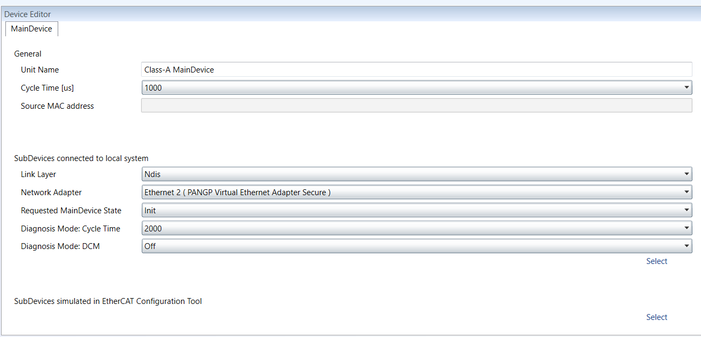

To help you setting up the Main-device and setting up the Sub-devices, there are in EtherCAT Configuration Tool additional tools to help you:
Usually on Windows, there is no real-time support, however, to get DCM in sync you can install the ECAT driver in the Network driver mode.
The network driver can then be used from the optimized link layers.
The real-time support is usually hidden in EtherCAT Configuration Tool. You can activate it by copying the specific link layer libraries into the installation directory of EtherCAT Configuration Tool.
For the local system, EtherCAT Configuration Tool turns on DCM and use the real-time clock for generating the job task cycles.
After activating the real-time support, you can select the optimized link layer in the Link Layer parameter or the MainDevice tab of the Device Editor pad.

Depending on the link layer type, you can choose the network adapter or the instance.